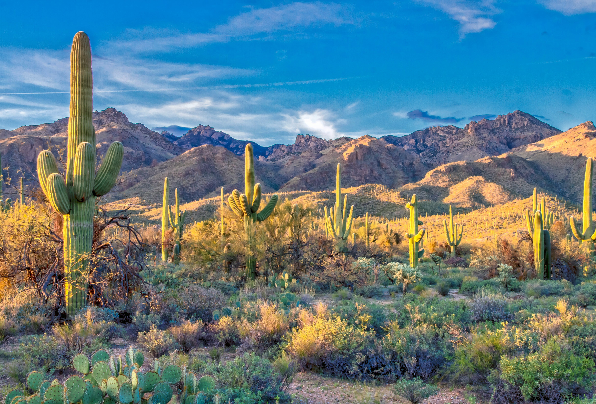
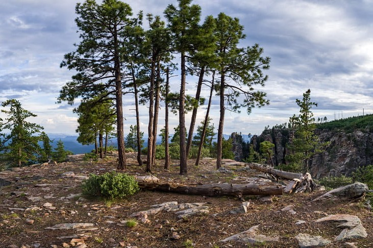
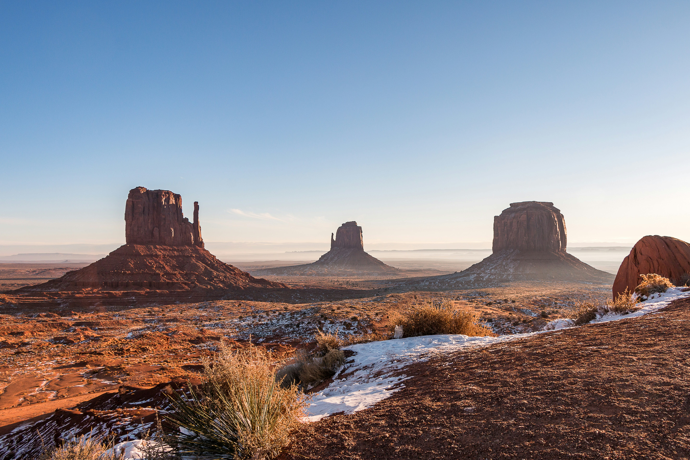

Ecoregions
Southern Arizona (Sonoran Basin and Range)

Located in southwestern Arizona, this hot desert region is known for its basin-and-range topography—broad valleys separated by rugged mountain ranges. It contains classic Sonoran Desert vegetation, including saguaro cactus, creosote bush, and palo verde, and experiences extremely high summer temperatures.
Central Arizona (Mogollon Rim)

Also known as the Arizona/New Mexico Mountains, this transitional zone in central Arizona forms a steep escarpment separating the Colorado Plateau of northern Arizona from lower desert regions. It supports dense ponderosa pine forests and mixed conifer ecosystems due to higher precipitation and cooler temperatures. The Rim is an important watershed and recreational area.
Northern Arizona (Colorado Plateau)

Covering a large portion of northern Arizona, this region features dramatic landscapes including mesas, buttes, and deep canyons. Vegetation varies with elevation, ranging from desert scrub to conifer forests. It is geologically significant and includes iconic landforms shaped by erosion.